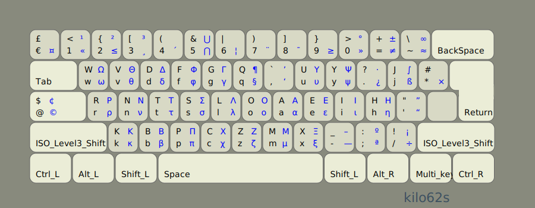
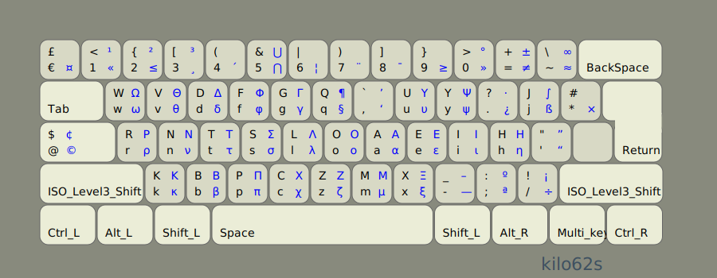

Kilo layouts (en)
Better English keyboard layouts generated using kilo. For some background on the different factors to consider in keyboard layouts optimization, take a look at layout optimization philosophy.
There is no best layout. These layouts offer different advantages and cater to different tastes. There is also the question of how important same finger is when it involves the stronger index and middle fingers and how much weight to assign to it. Here, some layouts sacrifice a little efficiency in letter placement to achieve better overall results. If none of these layouts meet your requirements you might want to download kilo and create your own from scratch.
The layouts come in two flavors:
Basic:


and Scientific/International:
 

The international part of it is by using the compose key and the level3/level4 keys and are still a work in progress.
Here are some stats.
name: kilo37
layout: wvdcg.,y-kxrntsloaeih/qbpmzf';ju
score: 92.56
positional_effort: 34.43
alternation: 70.33
text_direction: 50.20
same_hand:
jumps: 0.02
same_finger:
rp: 0.33
im: 3.68
adjacent-mrp:
inward: 4.01
outward: 0.45
balance: 52.29
rows: [16.25, 72.41, 11.16]
fingers: [7.95, 9.59, 14.48, 20.27, 0.00, 0.00, 18.03, 13.88, 7.72, 7.90]
indices: 38.30
middles: 28.36
rings: 17.31
pinkies: 15.85
name: kilo62
layout: wvdfgq,uy.jrntsloaeih'kbpczmx-;/
score: 89.79
positional_effort: 32.95
alternation: 70.26
text_direction: 50.05
same_hand:
jumps: 0.02
same_finger:
rp: 0.44
im: 3.65
adjacent-mrp:
inward: 3.95
outward: 0.67
balance: 52.78
rows: [17.05, 72.62, 10.15]
fingers: [8.44, 9.59, 14.48, 20.27, 0.00, 0.00, 16.96, 15.19, 9.08, 5.81]
indices: 37.23
middles: 29.67
rings: 18.67
pinkies: 14.25
name: QWERTY
layout: qwertyuiop[asdfghjkl;'zxcvbnm,./
score: 0.52
positional_effort: 64.74
alternation: 47.89
text_direction: 50.49
same_hand:
jumps: 9.66
same_finger:
rp: 2.31
im: 8.77
adjacent-mrp:
inward: 3.62
outward: 4.00
balance: 64.23
rows: [50.67, 31.41, 17.77]
fingers: [8.13, 8.18, 19.09, 28.83, 0.00, 0.00, 11.29, 9.02, 12.96, 2.35]
indices: 40.12
middles: 28.11
rings: 21.14
pinkies: 10.48
Features
Letter placement for QWERTY (positional effort)

Better placement,


And here is the positional_effort compared, it's probably acceptable
to sacrifice a little efficiency here to achieve better results overall.

Also, note that changing the weights for keys will change the positional effort
score anyway. Here are the weights used.

Better alternations,

Minimal jumps,

Minimal outward adjacent fingers (excluding Index finger)

Minimal same_finger_rp (excluding Index and Middle fingers)

combined jumps, same_finger_rp and same_finger_im,

combined jumps, outward, same_finger_rp and same_finger_im,
kilo score is not very important since it depends on weights used and
configuration values, but can be used as a rough indication,

Extra features
-
Changes the placement of the shift keys, allowing the use of the thumbs to shift instead of the pinkies. This is not a part of the optimization stats, but if you try it and don't like it you can always use the regular shift keys.
-
Uses shift keys for level 3/4 to make it easier to use these levels.
- Hijacks caps key.
Installation
This assumes you are using Linux. If you plan on customizing you'll need to install
kilo and read it's documentation.
Get it from repository, unpack into a directory and,
make
On Linux use the files out/*.xkb by appending them to
/usr/share/X11/xkb/symbols/us and
editing /usr/share/X11/xkb/rules/evdev.[xml,lst]
and base.[xml/lst]
etc. See keyboard layouts customization documentation for your distro.
On other operating systems there should be tools to help you create customized layouts.